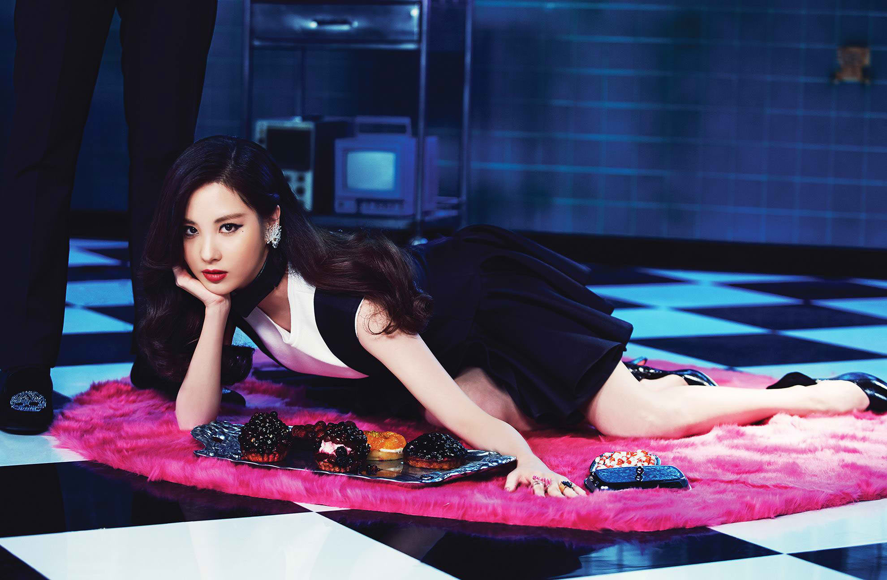

<!DOCTYPE html>
<html>
<head>

	<title></title>
	<link rel="stylesheet" type="text/css" href="memberStyle.css">

</head>
<body>

</body>
</html>

<div class="container">
	<div id="header">
		<font color="101010" size="60">0000000000000000000000</font>
		<a href="file:///home/eunice/Desktop/KIMBERLY OROZCO BSIS-2/index.html#section">MEMBERS</a><font color="101010">00</font>
		<a href=> SONGS</a><font color="101010">00</font>
		<a href=""> ALBUMS</a><font color="101010">00</font>
		<a href="">  ABOUT</a><font color="101010">0000</font>	
	</div>
	<br>
	<div id="member">
		<div id="section">
			<br>
		  	<div class="img">
			  <a target="_blank" href="taeyeon.html">
			 
			 </a>
			 </div>
				</div>
				<div id="name">Seohyun</div><br><strong>
	
				Name: Seo Joo-hyun – Korean: 서주현<br>
				Birthday: June 28, 1991<br>
				Birthplace: Seoul, South Korea<br>
				Height: 170cm – Blood type: A</strong><br><br>

				Released singles Oppa Nappa and Mabinogi with Jessica and Tiffany (2008)<br>
				Duet with trot singer Ju hyun-mi in JjaRaJaJja (2009)<br>
				Starred in variety show We Got Married with CNBlue’s Jung Yong-hwa (2010)<br>
				Solo in It’s Ok Even If It Hurts – drama OST for Kim Soo Roo (2010)<br>
				Voice-acting in animated film Despicable Me (2010) and Despicable Me 2 (2013)<br>
				Participated in Let’s Go – G20 Seoul Summit OST (2010)<br>
				Duet with Suju’s Donghae in Dreams Come True – charity song for UNICEF (2011)<br>
				Duet with Kim Hyun-joong in The Magic of Yellow Ribbon (2011)<br>
				Co-host of MBC Music Core with Taeyeon and Tiffany (2012-2013)<br>
				Solo in I’ll Wait for You – drama OST for Fashion King (2012)<br>
				Member of sub-unit Girls’ Generation-TTS (since 2012, details below)
				Played a part in drama Passionate Love (2013)<br>
				Duet with Suju’s Kyuhyun in T’PLE Couple Song – commercial song for SKT (2013)<br>
				Starred in stage musical Moon That Embraces The Sun (2014)<br>
				Wrote the lyrics for Only U (2014)<br>
				Starred in stage musical Gone with the Wind (2015)<br>

	</div>
	<br>
	<div id="footer">
			Copyright &copy; 2016 girlsgeneration.com | Kimberly Orozco BSIS-2
	</div>

</div>